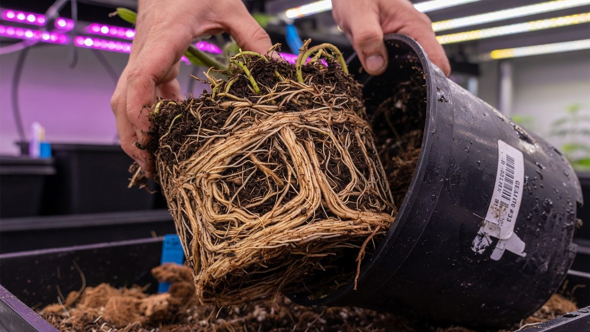
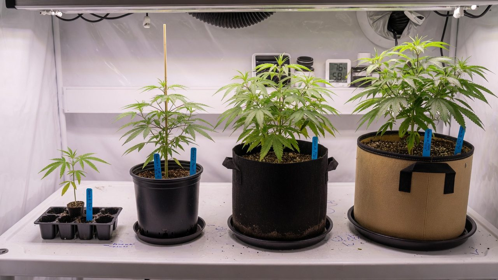
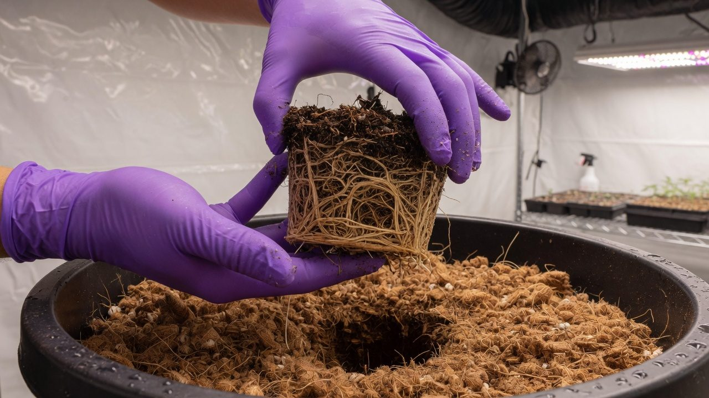
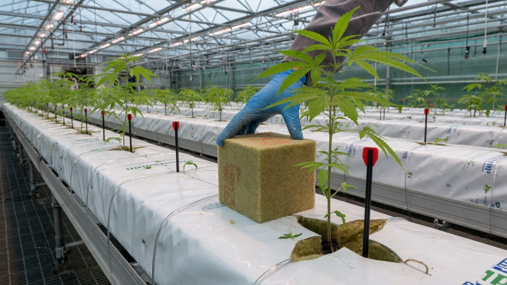

Transplanting: potting up without the stall
Every transplant is a controlled injury: done on time, into a prepared home, the plant never notices; done late or rough, it stalls for a week. When to up-pot, the container ladder, the mechanics, media-to-media moves, the first irrigation, and transplant shock from cause to recovery.
Purpose and scope
Transplanting (or potting up) is moving a plant into a bigger container, or into a different growing medium, before the one it’s in starts holding it back. Cannabis spends its whole indoor life in containers, so most plants get moved two or three times between cutting and harvest. Each move is a small, deliberate injury: you disturb the roots on purpose, so the plant can earn a bigger root system than the old pot allowed.
Done on time, into a prepared new home, a transplant costs the plant almost nothing. It keeps growing as if nothing happened. Done late, rough, or into a badly prepared pot, it costs days of stalled growth (called transplant shock), and in a room on a schedule, days are the one thing you can’t buy back.
This guide assumes you’ve never done it before and defines every term as it appears. By the end you’ll know when to move a plant, what size to move it into, how to physically do it, how the first watering works, and how to read, and prevent, the stall.
Anyone moving a rooted cutting or seedling onward: home growers stepping up pots, and operators running plug → block → slab lines. It picks up where the cloning and seeds & germination guides leave off, at a plant with roots that’s ready for a bigger home.
Definitions
Transplanting has less jargon than most grow topics, but the few terms it does have carry the whole logic. Learn these eight and every later section reads in plain English.
Evidence and limitations
We've gone to great lengths to keep these guides honest. One of the main ways we do that is self-review: we actively look for claims that are subjective, only lightly backed by literature, or based on grower practice rather than a controlled study — and we call those out instead of dressing them up as settled science.
Often there simply is no paper for the decision you're making. In those cases we're drawing on what other growers report and what has worked in our own rooms. That can still be useful — but it is not a lab proof. Do what works for your plants, your room, and your meters. If a table disagrees with your crop, believe the crop and log the difference.
- Core definitions and measurement units used in the paper
- Safety-critical limits where occupational or standards sources are cited
- Numeric stage targets (light, climate, feed) as starting bands, not laws
- SOPs that work in many rooms but need your genetics and meters
- Any single-number 'guaranteed' yield or potency claim without a multi-site trial
- Controller setpoints copied from another facility without re-calibration
See something glaringly wrong? Tell us and we'll fix it. Please open a GitHub issue with the paper name and what looks off (include a source if you have one): Report an accuracy issue. Local law, labels, and licences always override any recipe here. Inline notes labelled grain of salt flag the highest-risk over-trust points in the text.
Rooting-volume limits
A container isn’t just a bucket that holds media. It’s a hard limit on how big the plant’s engine can get. A meta-analysis of 65 pot-size experiments found that, on average, doubling the container volume increased plant biomass by 43%[1]. The interesting part is the mechanism: plants in small pots didn’t just run out of water or feed. They downregulated photosynthesis per unit of leaf area. The plant senses the restriction and throttles itself before you see a single symptom[1].
Horticulture has known the practical half of this for decades: transplants raised in larger cells come out stockier, establish faster, and often crop earlier, and the growth lost to severe root restriction is not always recovered after planting out[2][3]. Container size is a real production lever, not a detail.
The same meta-analysis suggests plants stop behaving ‘unrestricted’ once dry biomass passes roughly 1 gram per litre of pot[1]. You don’t need to weigh anything. The takeaway is that the ceiling arrives well before the pot looks full, and long before roots show at the drain holes. If the plant looks too big for the pot, it’s already paying rent.
Root function in containers
Roots grow outward and down until they hit something. In a smooth-walled pot, ‘something’ is plastic: the tip deflects sideways and keeps going, tracing the wall in circles. A circling tip keeps elongating instead of branching, so the ball develops a dense mat at the wall and stays sparse in the middle, exactly backwards from what you want.
Container research shows this plainly: in trials comparing container designs over two seasons, smooth-sided pots produced the worst root architecture, while air-pruning designs (open or perforated walls) significantly reduced the share of deformed, circling root mass[4]. When a tip meets dry air instead of plastic, it desiccates and stops, and the plant responds by branching fine roots further back. Same volume, radically better ball.
The other physiology that matters is the wound response. Cut or torn roots are not simply lost: wounding triggers local auxin (growth hormone) accumulation, which re-establishes the gradients that tell nearby tissue to build new root primordia[5]. This is why a gently teased or lightly scored root ball restarts and branches, while an intact circling mat placed untouched into new media often just… keeps circling[6]. A clean wound is a signal; a strangled coil is a habit.
In trees, circling roots eventually girdle the trunk. Cannabis never lives that long, your cost is different: a circled mat stays pot-shaped for weeks inside the new container, irrigation channels around it instead of through it, and the plant runs on a fraction of the volume you paid for. You see it as a plant that wilts fast and sits in wet media.

Indicators for transplant timing
The calendar is the least reliable signal you have. Genetics, pot size, temperature and light all change how fast roots fill a container, so read the pot, not the date. In rough order of trust:
- Drink-down speed. The pot that used to last two or three days between waterings now dries in one. Water use tracks root mass almost linearly. This is the earliest honest signal, and you notice it without touching the plant.
- The slide-out test. Tip the pot, support the stem between two fingers, and slide the ball out. Ready: it comes out whole, holds shape, white tips visible at the edges. Too early: media crumbles away. Late: a brown circling mat[6].
- Roots at the drain holes. A few white tips showing is a move-now signal. A mat growing out of the holes means you’re already late.
- Canopy overshoot. Practitioner convention: when the plant stands two to three times the height of its pot, or the leaves span well past the rim, the ratio is wrong and the ceiling from Section 3 is close.
- Wilting between waterings despite moist media. A late-stage, root-bound symptom. The ball can no longer buffer water even when the pot has some[6].
| Signal | Too early | Ready | Late |
|---|---|---|---|
| Slide-out ball | Media crumbles off | Holds shape, white edge tips | Brown mat, circling coil |
| Drain holes | Nothing visible | First white tips | Root mat growing out |
| Drink-down | 3+ days between waterings | Daily | Twice daily / wilts anyway |
| Top growth | Fits the pot | ~2–3× pot height | Stalled, pale, hungry |
How costly is being late? Autoflowering cannabis gives the cleanest published answer, because its fixed internal clock refuses to wait for you. In a New York hemp-program greenhouse trial, seedlings moved from 40 mL plugs into ~11 L (3-gal) pots at day 8 or day 15 grew the same as plants sown directly into the final pot. Held in the plug until day 22, two of three cultivars finished at barely half the height, with fewer branches[7].
Moving slightly early costs a little media and a crumblier ball. Moving late costs a throttled plant, a circling mat, and a slower restart. When in doubt, move. The window opens when the ball holds together and never truly reopens once circling sets in.

Container size progression
Indoor cannabis typically climbs a ladder of two to four containers, each step roughly 2–4× the volume of the last. The exact litres matter less than the ratio: big enough that the plant gets weeks of headroom, small enough that roots claim the new volume fast and the pot still wets and dries on a manageable cycle.
| Stage | Container | Typical volume | Time in it | Move when |
|---|---|---|---|---|
| Propagation | Plug / cube | 25–100 mL | 10–14 d | Roots show on multiple faces |
| Early veg | First pot | 0.5–1 L | ~1–2 wk | Ball slides out whole, white tips |
| Veg | Mid pot | 4–7 L | ~1–2 wk | Daily drink-down, edge tips |
| Late veg → flower | Final pot | 11–19 L indoor | Root-in, then flip | — |
Why steps instead of one leap into the final pot? Water and oxygen. A small root ball in a huge container can only drink a fraction of the volume, so the surrounding media stays wet for days. Roots need wet-dry cycling to pull oxygen through the profile; a permanently damp doughnut around a small ball is exactly the anaerobic, fungus-gnat-friendly zone where root disease starts. Growers call planting too small into too big overpotting, and it kills more seedlings than underpotting ever does.
Air-pruning containers keep the ball fibrous instead of circling[4], which makes long stays in one size more forgiving and transplants out of them gentler, the ball is all branch-tips, no mat. They dry faster than plastic, so they shift your irrigation, not your ladder.
Direct-to-final versus staged transplanting
Some growers skip the ladder entirely and start seeds or clones in the final container. It’s a legitimate strategy with real costs, and the right answer depends on your plant type and your irrigation discipline, not on forum ideology.
- For: tight moisture control at every stage; roots colonise each volume fully, building a dense, layered ball; small plants stay mobile and dense under lights; culls cost a plug, not 15 L of media.
- Against: every move is labour and a shock opportunity; more handling means more chances to do it rough; miss a window and you’ve built the root-bound problem yourself.
- For: zero mid-run disturbance, decisive for autoflowers, whose clock won’t pause for recovery[7]; fewer labour touches per plant; no transplant windows to miss.
- Against: overpotting risk for weeks. Irrigation must be tiny, targeted shots at the ball, not pot-volume waterings; a whole pot of media bet on every seedling; slow wet-dry cycles until roots catch up.
The verdict most rooms land on: photoperiod plants get staged, because veg length is elastic and the control is worth the labour; autoflowers go direct to final (or move once, very early, by about day 15 at the latest[7]). And in drip-irrigated commercial rooms the question dissolves: the ladder is built into the media itself, plug → block → slab, which is the next section.

Transplant procedure
The whole job takes two minutes per plant once staged. Do it late in the light period or under dimmed light. Transpiration is lower, so the plant loses less water while its roots are disturbed (practitioner convention). Have everything ready before you touch a plant: filled pots, mixed solution, clean hands or gloves.
- 1Pre-fill and pre-moisten the new homeFill the destination with media and wet it with nutrient solution before the plant arrives: coco pre-buffered and wet through; rockwool conditioned and saturated to its target weight (a 15 cm block should sink when dunked, and weigh in around its stated saturated minimum)[8]; soil damp, not soggy. Scoop a hole the size of the incoming ball.
- 2Water the plant 12–24 h before the moveA moist ball holds together; a dry one shatters and a saturated one smears. Moistening before handling measurably reduces transplant stress in commercial transplant practice[3].
- 3De-pot by the ball, never the stemSplay two fingers across the media either side of the stem, invert the pot, squeeze or tap the rim, and let the ball drop into your hand. Handle by the root ball (or, for small seedlings, the leaves), never pull the stem[9]. A leaf regrows; a crushed stem is the whole plant.
- 4Inspect, and only then intervene
- 5Set the depth: crown at gradeTop of the ball level with, or 5–10 mm below, the new surface, covered so it can’t wick dry, shallow enough that the stem isn’t sitting in wet media. Cannabis tolerates modest stem burial and can root from buried stem like its garden cousins, but deep burial of soft green stem in a wet pot trades a maybe-benefit for a real rot risk. Leggy seedlings are the exception: bury the stretch, then keep the collar zone on the dry side.
- 6Backfill and firm, gentlyFill around the ball and press just enough to close air pockets. Roots cross a contact, not a cavity. Establishment is limited by root–media contact[11]. But compaction crushes the pore space they breathe through: firm like you’re seating it, not ramming it.
- 7Water it inA slow, thorough soak with nutrient solution at the strength the plant already knows, until the profile is wetted and the media settles onto the ball[10]. This is a settling drink, not a flush. Section 10 covers the numbers.
- 8Back offReturn the plant to slightly gentler conditions for 24–48 h, a touch less light, easy VPD, no training, no defoliation. Then resume. Most transplants need nothing else.

Transitions between propagation media
Up-potting soil into soil is the easy case. Commercial cannabis mostly moves plants between media (rockwool plug into coco, plug into block, block onto slab) and every one of those moves lives or dies at the interface. Three rules govern it: the surfaces must touch (capillary flow breaks at an air gap), the destination must be wet enough to accept roots on day one, and after that it should run slightly drier than the ball, so roots chase the water out into the new volume.
Plug → coco
Bury the plug completely, an exposed rockwool shoulder acts as a wick and dries the whole plug from the top. Pre-charge the coco with full-strength veg solution, then run small, frequent shots centred over the plug until roots strike into the coco. Keep the plug’s own moisture up in the first days: coco around it can read ‘wet’ while the plug itself has gone dry.
Plug → rockwool block
Condition the block with the same-strength solution the cuttings were already on (cuttings typically run a modest veg feed around 1.5 mS/cm at pH 5.5–6.5), saturate it fully, it should sink when dunked, then seat the plug into the hole with full side and base contact and give the first irrigation within 24 hours with that same solution[8]. A well-rooted plug with roots showing on multiple faces colonises a block in days; a weak plug drowns in one.
Block → slab
The greenhouse standard. Cut the planting holes in the slab wrap, wet the slab to its conditioning target, and set the block so its base sits in direct, full contact with the slab face, then press down gently[8]. Now the counterintuitive part: stop irrigating. Let the block dry back over the next day or two so the roots dive into the wetter slab beneath (rooting-in). Resume drip only once roots are visibly into the slab. Growers who keep dripping the block grow a plant that lives in the block and treats the slab as a doormat.
Soil steps
Same-family moves (seedling mix into potting soil, potting soil into a bigger pot) are the lowest-risk transition on the map. Match texture (a fine peat ball set into coarse bark drains past itself), firm the contact, water in[10]. Everything else in this paper still applies; nothing extra does.
After any cross-media move, the old ball and the new media are two different hydraulic systems until roots bridge them. Drippers wet the new media; capillarity across the interface is weak; the ball becomes a dry island in a wet pot, and the plant wilts while your sensors read perfect. Hand-water directly over the ball for the first days, or place a dripper on the ball itself, until roots have visibly crossed. Assume the island until proven bridged.
Watering-in: initial EC and pH
The first irrigation after a transplant does two jobs. Hydraulic: it settles the new media into full contact with the ball, closing the air gaps that block both water movement and root crossing[10]. Chemical: it sets the root-zone solution the disturbed roots wake up to, and disturbed roots want continuity, not surprises.
EC: match what the plant was already on, or sit slightly below it, practitioner convention is the known feed EC, minus up to ~0.3–0.4 mS/cm, never a big jump up. In inert media (rockwool, coco) don’t water-in with plain water: it starves the plant and swings the root zone, the opposite of continuity[8]. Vegetable growers water-in with a dilute, phosphorus-forward starter solution for the same reason, a modest, root-available charge right where the ball sits[9].
| Destination | First-drink EC | pH | Volume | Then |
|---|---|---|---|---|
| Coco pot | Match veg feed (≈1.2–2.0) | 5.8–6.2 | To first runoff | Small frequent shots at the ball |
| Rockwool block | Same solution as plug feed (≥1.5 typical) | 5.5–6.1 | Within 24 h of seating[8] | Then shots ~3–6% of block volume[8] |
| Rockwool slab | Slab pre-conditioned at feed EC | 5.5–6.1 | None at placement | Hold irrigation; dry the block back to root-in |
| Soil / peat pot | Dilute feed or starter solution[9] | 6.2–6.8 | Thorough soak, slight runoff | Hold 2–4 d; let it breathe |
Water-in thoroughly, then leave the pot alone until the surface layer dries. The classic beginner error after transplanting is daily heavy watering of a volume the roots haven’t claimed. Which is overpotting by irrigation. Rooting-in needs oxygen as much as water.
Transplant shock: causes, prevention, and reading recovery
Transplant shock is the umbrella term for death or checked growth soon after a move, and the forestry literature, which has studied it hardest, is blunt that it’s not one thing but a family of stresses that share a symptom[12]. The dominant member of the family is water: a disturbed or undersized root system can’t couple to the new media fast enough to supply the canopy, the plant closes its stomata to survive, and photosynthesis, and growth, stall until new root growth restores the connection[11].
Ranked causes in an indoor room: ball damage from rough or dry handling; a dry interface (the island effect); an osmotic cliff at watering-in; climate too aggressive for a compromised root system (high VPD, high light); cold media, root growth slows sharply in cold root zones, and a fresh transplant is nothing but root growth (keep media roughly 18–24 °C, practitioner convention); and simple lateness, a root-bound plant enters the move already compromised.
Prevention is mostly hardening logic. Outdoor growers spend 7–14 days acclimating transplants (graduated exposure, reduced watering frequency) which thickens cuticles and banks carbohydrate reserves that fund root regrowth after the move[13]. Indoors, moving within one room, you inherit that benefit for free; recreate it whenever environments differ across the move: step light and VPD gently for the first 48 h in the new position, exactly as you would moving clones to the veg room.
Reading recovery: a few hours of soft droop after watering-in is normal. Re-tensioned leaves by next lights-on and visible new top growth within 3–5 days is a clean move. A stall past 7 days is not ‘shock’ as weather. It’s a cause still operating: go to the troubleshooting table. Badly root-bound rescues run longer, expect ~2 weeks before growth resumes[6].
Marketed shock remedies are mostly dilute nutrients plus hope. Nothing in a bottle substitutes for an intact ball, a wet touching interface, chemical continuity, and 48 easy hours. Get those four right and there’s nothing left for a tonic to fix; get them wrong and no tonic will.
Common transplant failures
Six patterns cover nearly every transplant loss. Learn their shapes and you’ll catch them in the act instead of in the post-mortem.
A small ball in a huge, cold, wet volume. The media never dries, oxygen never cycles, gnats and root rot move in. Fix: right-size steps; if committed to a big pot, irrigate tiny and targeted at the ball only.
Dry ball pulled out by the stem; the fine root tips that do the actual drinking tear off. The plant looks fine for a day, then collapses. Fix: water 12–24 h before, de-pot inverted, handle the ball[3].
Drippers wet the new media, capillarity fails at the interface, and the old ball dries out invisibly. Plant wilts in a ‘wet’ pot. Fix: hand-water over the ball until roots bridge.
Hot pre-charged media, a strong first feed, or plain water in inert media, a chemistry jump onto wounded roots. Tips burn or the plant sulks. Fix: first drink at the EC the plant already knows[8].
Soft green stem set below grade in wet media rots at the collar, the plant tips over at the media line weeks later. Fix: ball at grade, 5–10 mm cover max, collar zone kept on the dry side.
Timing transplants against the veg schedule
One rule organises the whole calendar: every transplant needs a rooting-in buffer before the next stress event, a flip, a topping, a room move. Stack two stresses in the same 72 hours and the recoveries stack too.
For a photoperiod clone on a typical 4-week veg: up-pot the rooted plug into its first pot on day 0, move to the final container around day 10–14, and flip with the final pot substantially rooted-in. The last up-pot should land 7–14 days before the flip (practitioner convention): weeks 1–3 of flower are the stretch and the steepest climb in water demand, and you want that arriving on a root system that has already claimed its full volume, not one still bridging an interface.
- Don’t transplant into flower. After the flip the plant is spending on stretch and bud sites; root rebuilding competes directly. Emergency rescues in the first days of flower can work, as triage, not planning.
- Separate stressors by 3–4 days. Transplant, then top or defoliate on another day. Each recovery is cheap alone and expensive stacked.
- Autoflowers compress everything. Their calendar runs itself: direct-sow or move by ~day 15, and after that treat the container decision as final[7].
- Mothers break the ladder rule. A mother plant is kept slightly root-restricted on purpose, big enough to stay healthy, small enough to stay manageable, refreshed by root-pruning or re-potting on its own maintenance cycle, not on the crop’s.
Troubleshooting
Work the table top to bottom. It’s ordered by how often each cause turns out to be the real one. Change one thing, give it 24 hours, reassess.
| Symptom | Likely cause | What to do |
|---|---|---|
| Droop >48 h, media moist | Root damage; hydraulic limit | Ease VPD (≈0.8 kPa) and light; no more water until the top layer dries; wait for new tips |
| Droop, but the old ball is bone dry | Island effect, interface never bridged | Hand-water directly over the ball; dripper on the ball until roots cross |
| Wilts fast and pot stays wet | Root-bound ball never broke out | Slide-out check; tease/score the mat if coiled; small targeted shots meanwhile |
| Lower leaves yellow in week one | Underfed, plain-water water-in or weak media charge | Feed at the plant’s known EC; check runoff EC to confirm |
| Leaf tips burn days after the move | Osmotic cliff, media pre-charge or first drink too hot | Irrigate at reduced EC to pull the root zone down gradually |
| No new growth 7+ d, no droop either | Cold root zone, or a still-open air gap | Media to 18–24 °C; water to settle contact; check pot isn’t sitting on cold floor |
| Stem soft or brown at the media line | Buried crown / wet collar | Pull media back to expose the collar, dry the surface, increase airflow; often terminal, cull if it rings the stem |
| Media stays wet 5+ days | Overpotted | Stop watering; tiny shots at the ball only; warmth and airflow; patience |
Root-zone expansion principles
Strip the detail away and transplanting is a real-estate pitch aimed at roots: the new volume has to be easier to live in than the old one, on day one, or the plant declines the offer and stalls.
- Pots are ceilings. Restricted roots throttle photosynthesis before any visible symptom, a plant that looks too big for its pot is already paying[1].
- Move on signs, not dates. Ball slides out whole, white tips at the edge, drink-down accelerating. The window closes faster than it opens[7].
- The interface is the transplant. Wet, touching, chemically continuous. Everything else is furniture[11].
- Shock is mostly self-inflicted. Intact ball, bridged interface, matched EC, 48 easy hours, break any link in the cascade and the plant never notices it moved[12].
Upstream of this paper: raising the plants you’ll move, in cloning and seeds & germination. Downstream: what the roots do with the volume you just sold them. Which is the rest of the grow.
References
- Poorter H, Bühler J, van Dusschoten D, Climent J, Postma JA (2012). Pot size matters: a meta-analysis of the effects of rooting volume on plant growth. Functional Plant Biology 39(11):839-850. (65 studies; doubling pot volume raised biomass ~43% on average, driven by reduced photosynthesis per unit leaf area; ~1 g dry biomass per litre suggested as the restriction threshold.) https://pubmed.ncbi.nlm.nih.gov/32480834/
- NeSmith DS, Duval JR (1998). The effect of container size. HortTechnology 8(4):495-498. (Review of container cell size and root restriction in vegetable and floral transplants: smaller cells reduce transplant growth, and effects can persist after planting.) https://journals.ashs.org/horttech/view/journals/horttech/8/4/article-p495.xml
- Boyhan GE, Coolong T. Commercial production of vegetable transplants. University of Georgia Extension, Bulletin 1144. (Larger cells produce stockier, earlier plants; hardening by reduced water 5-7 d; moisten root balls before handling to reduce transplant stress.) (industry/manufacturer or non-journal source) https://fieldreport.caes.uga.edu/publications/B1144/
- Amoroso G, Frangi P, Piatti R, Ferrini F, Fini A, Faoro M (2010). Effect of container design on plant growth and root deformation of littleleaf linden and field elm. HortScience 45(12):1824-1829. (Smooth-sided containers gave the worst root architecture; air-pruning container designs significantly reduced deformed, circling root mass.) https://journals.ashs.org/view/journals/hortsci/45/12/article-p1824.xml
- Alaguero-Cordovilla A, Sánchez-García AB, Ibáñez S, Albacete A, Cano A, Acosta M, Pérez-Pérez JM (2021). An auxin-mediated regulatory framework for wound-induced adventitious root formation in tomato shoot explants. Plant, Cell & Environment 44(5):1642-1662. (Wounding triggers local auxin biosynthesis which, with shoot-supplied auxin, re-establishes the gradients that initiate new root formation.) https://pubmed.ncbi.nlm.nih.gov/33464573/
- Royal Queen Seeds. How to prevent and fix rootbound cannabis plants. Industry cultivation guide. (Root-bound symptoms — fast dry-down, drain-hole roots, wilt despite moisture; fixes — loosen the coiled ball, trim circling exterior roots, repot; ~2-week recovery.) (industry/manufacturer or non-journal source) https://www.royalqueenseeds.com/blog-how-to-prevent-and-fix-root-bound-cannabis-n760
- Bhattacharya S, Zittel W (2023). Research explores how to reduce transplanting stress in autoflowering cannabis. Cannabis Business Times, New York state hemp research program greenhouse trial. (40 mL plugs into ~11 L pots: transplanting at day 8 or 15 matched direct seeding; day 22 cut final height ≥55% in two of three CBD autoflower cultivars and reduced branching.) (industry/manufacturer or non-journal source) https://www.cannabisbusinesstimes.com/news/cannabis-autoflower-research-transplant-plugs-containers/
- Grodan (2024). Grow Guide, Cannabis Edition Vol. 2: Growing in Grodan products. Manufacturer technical guide. (Condition blocks with the same-strength solution the cuttings ran, saturate fully and confirm by weight, first irrigation within 24 h of transplant, then irrigation events of ~3-6% of media volume; block placed in direct contact with the slab.) (industry/manufacturer or non-journal source) https://www.grodan.com/siteassets/downloads/downloads-na-101/grow-guide-2023/growing-in-grodan-products.pdf
- Langenhoven P, Maynard L (2023). Setting your transplants up for success. Purdue University Extension, Vegetable Crops Hotline #717. (Handle seedlings by the root ball or leaves, never the stem; water-in with ~240 mL of dilute phosphorus-forward starter solution per plant; crop-specific depth limits.) (industry/manufacturer or non-journal source) https://vegcropshotline.org/article/setting-your-transplants-up-for-success/
- University of Maryland Extension. Planting vegetable transplants. Home & Garden Information Center. (Water-in with a weak liquid fertiliser to settle media into air gaps; handle carefully; avoid overgrown transplants with woody stems and circling roots; shelter new transplants from wind and direct sun.) (industry/manufacturer or non-journal source) https://extension.umd.edu/resource/planting-vegetable-transplants
- Grossnickle SC (2005). Importance of root growth in overcoming planting stress. New Forests 30:273-294. (Planting stress occurs when the root system cannot supply canopy transpiration; establishment depends on root growth rate, root-soil contact and hydraulic conductance.) https://link.springer.com/article/10.1007/s11056-004-8303-2
- Close DC, Beadle CL, Brown PH (2005). The physiological basis of containerised tree seedling ‘transplant shock’: a review. Australian Forestry 68(2):112-120. (Transplant shock defined as mortality or impaired growth soon after planting; an umbrella over distinct physiological stress responses, each with its own mitigation.) https://figshare.utas.edu.au/articles/journal_contribution/The_physiological_basis_of_containerised_tree_seedling_transplant_shock_a_review/22863188
- Njue G, Lang K, Schnabel C. Harden your transplants prior to planting your garden. South Dakota State University Extension. (Harden over 7-14 d with graduated exposure and reduced watering frequency; hardening thickens leaf cuticle and accumulates carbohydrate reserves that fund establishment.) (industry/manufacturer or non-journal source) https://extension.sdstate.edu/harden-your-transplants-prior-planting-your-garden
Citations marked in-text as [n] map to this list. Primary literature and official guidance except where noted. Cannabis tissue culture is strongly genotype-dependent, verify dilutions, hormone doses and local regulations against the primary sources before relying on them.